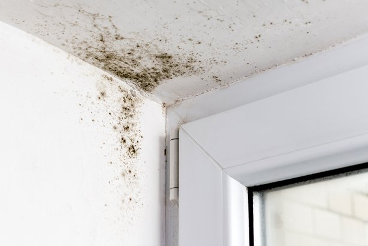
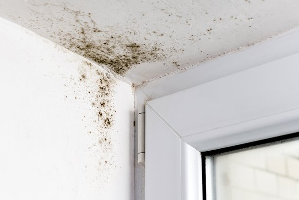

When an emergency occurs, we know that time is critical, that is why Accuracy are ready 24/7 all year round, you can be sure that Accuracy will restore your property with the highest standards protocol in the industry.
Accuracy specializes in restoring commercial buildings/warehouses, multi-family, school, and municipal buildings, residential damaged by fire, water, wind, vandalism, and other natural disasters.
 

Mold can cause health problems. Inhaling or touching mold or mold spores can cause allergic reactions or asthma attacks in sensitive individuals. It can also cause fungal infections. Also, exposure to mold can irritate your eyes, skin, nose, throat, and lungs.
Read more...The biological agents with infectious capacity can be diverse (viruses, bacteria, parasites, fungi or spores, toxins, endotoxins, cell cultures, etc. For this contact to occur, there must be a transmission route that allows the agent to come into contact with the organ or system where the agent in question can cause harm.
Asbestos-related lung diseases typically develop over many years. In general, people who get sick from asbestos are because they have been exposed to asbestos in their jobs for a long time. Smoking cigarettes increases your risk.
They can cause a host of health problems, from eye irritation and a runny nose to chronic heart and lung disease. Exposure to particulate pollution is even linked to premature death.
Services such as water supply and sewerage are vulnerable to disasters; the Installations can be damaged, pipes can be broken and operations can be interrupted by power outages.
A disaster is a calamitous, sudden or foreseeable event that seriously disrupts the functioning of a community or society and causes human, material, economic or environmental losses that exceed the capacity of the affected community or society to deal with the situation on its own.
The biological agents with infectious capacity can be diverse (viruses, bacteria, parasites, fungi or spores, toxins, endotoxins, cell cultures, etc. For this contact to occur, there must be a transmission route that allows the agent to come into contact with the organ or system where the agent in question can cause harm.
fire and smoke can cause a number of health problems, from eye irritation and runny nose to chronic heart and lung diseases. Exposure to particulate pollution is even linked to premature death.
Services such as water supply and sewerage are vulnerable to disasters; the Installations can be damaged, pipes can be broken and operations can be interrupted by power outages.
A disaster is a calamitous, sudden or foreseeable event that seriously disrupts the functioning of a community or society and causes human, material, economic or environmental losses that exceed the capacity of the affected community or society to deal with the situation on its own.
When an emergency occurs, we know that time is critical, that is why Accuracy are ready 24/7 all year round, you can be sure that Accuracy will restore your property with the highest standards protocol in the industry.